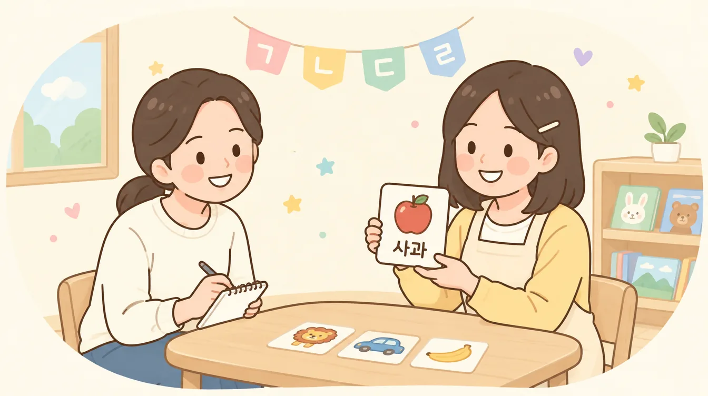
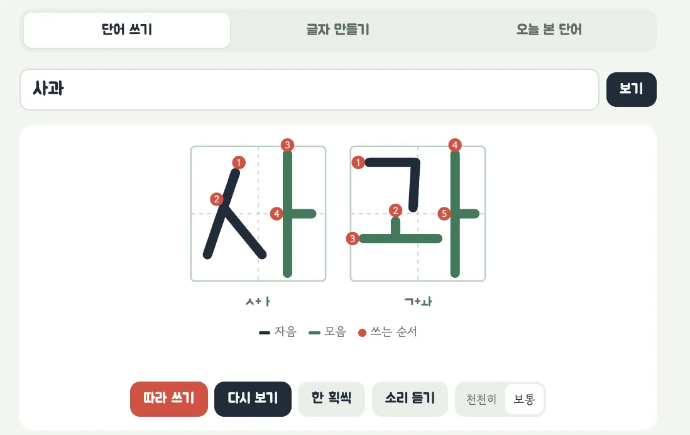

우리 아이 한글 공책
코딩 몰라도 괜찮아요. 템플릿을 복사해서 10분이면 우리 아이 한글 공책이 생겨요.
API 키도, 결제도 필요 없어요. 구글 계정 하나면 돼요.
배경
2학기 학부모 상담 날, 3세반 담임 선생님께 조심스럽게 여쭤봤어요.

요즘 아이가 원에서 한글을 배우나 봐요.
집에 오면 "엄마, 이거는 ㄱ, ㄴ이야" 하고 알려 주고, 한글떼 노래도 듣고 곧잘 따라 해요.
집에서는 어떤 걸 함께 해 주면 좋을까요?
이제부터는 사물 이미지와 단어를 함께 보여 주세요.
선생님 말씀을 듣고 집에 오는 길에 생각했어요.
아이는 하루에도 몇 번씩 손가락으로 가리키며 물어봐요.
"엄마, 이거 뭐야?"
단어도 함께 보여 주면 어떨까?
그렇게 하나씩 모아서 우리만의 단어장을 만들기로 했어요.
학습지 대신, 엄마랑 하루 10분 같이해요.
아이가 말한 단어와 글자를 넣고, 옆에서 함께해 주세요.
쓰는 순서, 소리, 관련 단어는 공책이 알아서 보여 줘요.

기능은 이렇게 되어 있어요.
| 기능 | 이렇게 써요 |
|---|---|
| 단어 쓰기 | 단어를 입력하면 칸 공책 위에 획이 하나씩 그려지고, 빨간 숫자로 쓰는 순서가 나와요. 숫자 0~9도 돼요. |
| 글자 만들기 | 자음, 모음, 받침을 누르면 ㄱ + ㅏ = 가처럼 글자가 만들어지고, 소리와 그림 단어를 보여줘요. |
| 따라 쓰기 | 빨간 시작점에서 화살표까지 손가락으로 그으면 다음 획으로 넘어가요. 틀리면 다정하게 다시 알려줘요. |
| 오늘 본 단어 | 산책길에 본 소방차를 사진과 함께 붙여 두고, 저녁에 큰 화면으로 함께 봐요. |
| 단어 추가 | 아이 이름, 좋아하는 장난감처럼 우리 아이가 아는 단어를 넣으면 관련 단어에 같이 나와요. |
준비물
1️⃣ 구글 계정 만들기
- sheets.google.com 접속 → "계정 만들기" 클릭
- 이름·생년월일·Gmail 주소·비밀번호 설정 (약 5분)
- 한 번 만들면 지메일, 문서, 드라이브까지 같은 계정으로 써요
2️⃣ 클로드 시작하기 (선택)
1단계. 사이트 들어가서 가입하기
- 주소창에 claude.ai 입력 → 접속
- "Sign up" 버튼 클릭 → 구글 계정으로 가입 (제일 빠르고 쉬워요!)
2단계. 채팅창에 질문하기
- 가입 후 나오는 하얀 채팅창에 궁금한 걸 물어보면 끝!
공책에 기능을 더하거나 우리 집에 맞게 바꾸고 싶을 때 클로드에게 부탁하면 돼요. 챗GPT도 괜찮아요. 아래 "AI로 이어서 만들기"에서 자세히 알려드릴게요.
1단계 · 템플릿 내 것으로 복사하기
📋 한글 공책 템플릿 사본 만들기- 위 버튼을 누르면 "문서 사본을 만드시겠습니까?" 화면이 열려요
- 사본 만들기를 누르면 내 구글 드라이브에 저장돼요
- 파일 이름은 마음대로 바꿔도 괜찮아요 (탭 이름만 바꾸지 마세요)
2단계 · 처음 한 번만 하는 설정
- 사본을 열고 새로고침하면 위쪽에 ✏️ 한글 공책 메뉴가 생겨요 (몇 초 걸릴 수 있어요)
- ✏️ 한글 공책 → ① 처음 설정하기를 눌러요
- "승인 필요" 창이 뜨면 계속 → 내 계정 선택
- "Google에서 확인하지 않은 앱" 화면이 나오면 고급 → (프로젝트 이름)(으)로 이동(안전하지 않음) → 허용
- "설정이 끝났어요!" 창이 뜨면 완료예요. 시트에 오늘본단어 · 추가단어 · 설정 탭이 생기고, 내 드라이브에 사진 폴더가 만들어져요
3단계 · 앱 주소 만들기
- 시트 위쪽 메뉴 확장 프로그램 → Apps Script를 눌러요
- 오른쪽 위 파란 배포 → 새 배포 → 유형 선택 톱니바퀴에서 웹 앱
- 다음 사용자 인증 정보로 실행: 나 · 액세스 권한이 있는 사용자: 모든 사용자 → 배포
- 시트로 돌아와 ✏️ 한글 공책 → ② 📱 앱 링크 확인하기를 누르면 설정 탭에 내 앱 링크가 적혀요
액세스는 "모든 사용자"여야 가족이 구글 로그인 없이 열 수 있어요. "Google 계정이 있는 모든 사용자"와 헷갈리지 마세요.
4단계 · 가족과 함께 쓰기
- 내 앱 링크를 가족 단톡방에 보내요
- 각자 폰에서 링크를 열고 홈 화면에 추가하면 앱처럼 아이콘이 생겨요
- 아이폰: 사파리 아래 공유 버튼 → 홈 화면에 추가
- 안드로이드: 크롬 오른쪽 위 ⋮ → 홈 화면에 추가
- 누가 단어를 붙이든 모두의 공책에 똑같이 보여요
5단계 · 아이와 이렇게 놀아요
- 산책 후 5분: 오늘 본 것을 사진 찍어 오늘 본 단어에 붙이고, 아이와 함께 보기로 큰 화면에서 봐요
- 잠들기 전: 따라 쓰기로 오늘 단어를 한 번 써 봐요. 다 쓰면 "정말 잘했어요" 소리가 나와요
- 주말 놀이: 글자 만들기에서 ㄱ부터 ㅎ까지 바꿔 가며 "가, 나, 다" 소리를 들어요
- 숫자: 단어 쓰기에 123이나 아이 나이를 넣어 숫자 획순도 봐요
하루 한 단어면 충분해요. 아이가 먼저 "오늘은 뭐 붙여?" 하고 물어보는 날이 와요.
우리 집에 맞게 바꾸고 싶으면
- 설정 탭의 공책 이름을 "리한이 한글 공책"처럼 바꾸면 앱 제목이 바뀌어요
- 첫 화면 예시 단어에 아이 이름, 가족 호칭을 쉼표로 적으면 단어 쓰기 첫 화면에 버튼으로 나와요
- 공책 화면의 글자 만들기 → 단어 추가하기로 우리 아이 단어를 사진과 함께 넣을 수 있어요
- 쌓인 단어는 오늘본단어 탭에서 날짜별로 볼 수 있어요. 한 달 결산을 만들기 좋아요
AI로 이어서 만들기
"동물 퀴즈도 있으면 좋겠다", "영어 단어도 같이 보고 싶다" 싶으면 클로드나 챗GPT에게 부탁해서 직접 키워 갈 수 있어요. 공책은 파일 2개로만 되어 있어서 AI가 읽고 고치기 쉬워요.
| 파일 | 하는 일 |
|---|---|
| index.html | 공책 화면 전부 (획순, 따라 쓰기, 디자인). 화면을 바꾸고 싶으면 이 파일 |
| Code.gs | 시트와 사진 폴더에 저장하는 부분. 저장할 항목을 늘릴 때만 이 파일 |
① 파일 내용을 AI에게 주기
- 확장 프로그램 → Apps Script에서 왼쪽 index.html을 눌러요
- 코드 창을 클릭하고 전체 선택(Ctrl+A / ⌘+A) → 복사해요
- 메모장에 붙여 index.html로 저장해서 첨부하거나, 채팅창에 바로 붙여넣어요
② 이렇게 부탁하기
구글 시트 + Apps Script 웹 앱으로 만든 아이 한글 공책을 쓰고 있어. 첨부한 index.html은 화면 전체이고, 저장은 google.script.run으로 Code.gs 함수(getData, addEntry, addWord 등)를 불러서 해. 이렇게 바꾸고 싶어: (원하는 내용) 규칙: 1. 기존 기능(획순, 따라 쓰기, 오늘 본 단어, 가족 공유)은 그대로 둬 줘. 2. 바꿀 부분만 "어디를 찾아서 → 무엇으로 바꾸는지" 하나씩 알려줘. 3. Code.gs도 고쳐야 하면 따로 알려줘. 4. 나는 코딩을 몰라. 붙여넣는 위치를 쉽게 설명해 줘.
이런 것도 부탁할 수 있어요 (요청 예시)
- "글자 만들기에 영어 단어도 같이 보여 줘. 사과 옆에 apple처럼"
- "따라 쓰기를 다 하면 스티커가 하나씩 쌓이게 해 줘"
- "오늘 본 단어에 아이가 한 말을 메모로 적을 칸을 추가해 줘" (Code.gs도 같이 고쳐야 해요)
- "그림 단어를 보여 주고 첫 글자를 맞히는 퀴즈 탭을 만들어 줘"
- "색을 우리 아이가 좋아하는 하늘색으로 바꿔 줘"
③ 고친 내용 반영하기
- AI가 알려준 대로 Apps Script의 파일을 고치고 저장(💾)해요
- 배포 → 배포 관리 → 연필(수정) 아이콘 → 버전에서 새 버전 → 배포
- 앱을 새로고침하면 바뀐 화면이 보여요. 주소는 그대로라 가족에게 다시 보낼 필요 없어요
고치기 전에 지금 index.html 내용을 메모장에 백업해 두면, 이상해져도 되돌릴 수 있어요.
막혔을 때
오류가 뜨거나 뭔가 이상하면, 화면을 캡처해서 @hello.ont DM으로 보내주시거나 클로드에게 물어보세요.
구글 시트 + Apps Script로 만든 아이 한글 공책을 쓰다가 이렇게 오류가 떴어. 어떻게 해야 해? (캡처 사진 첨부)
자주 나오는 문제
- "단어장이 아직 준비되지 않았어요" → 시트에서 ① 처음 설정하기를 한 번 더 눌러 주세요
- 가족 폰에서 "권한 없음" 화면 → 3단계에서 액세스를 모든 사용자로 바꾸고 다시 배포해 주세요
- 고쳤는데 화면이 그대로예요 → 새 버전으로 배포했는지 확인해 주세요. 저장만 하면 반영되지 않아요
- 소리가 안 나와요 → 폰 무음 모드를 끄고, 사파리나 크롬에서 열어 주세요
- 사진이 안 보여요 → 드라이브의 사진 폴더 이름은 바꿔도 되지만, 폴더를 지우면 사진이 사라져요
자주 나오는 어려운 말, 쉽게 뜻풀이
| 어려운 말 | 쉽게 말하면 |
|---|---|
| 사본 | 원본을 그대로 복사한 내 것. 마음껏 고쳐도 원본은 그대로예요 |
| Apps Script | 구글 시트 안에 들어 있는 작은 프로그램. 공책 화면과 저장을 맡아요 |
| 웹 앱 배포 | 시트 속 공책을 주소로 열 수 있게 만드는 것 |
| 새 버전 | 고친 내용을 앱 주소에 반영하는 버튼. 주소는 그대로예요 |
| 탭 | 시트 아래쪽에 있는 페이지 이름표 |
| 획순 | 글자를 쓰는 순서. 빨간 숫자로 보여줘요 |
꼭 기억해야 할 규칙 3가지
- 탭 이름은 절대 바꾸지 마세요. 공책이 "오늘본단어", "추가단어", "설정" 이름으로 탭을 찾아가요.
- 앱 주소는 가족에게만 보내세요. 주소를 아는 사람은 단어를 넣고 지울 수 있어요.
- 코드를 고쳤다면 새 버전으로 배포하세요. 저장만 하면 앱에 반영되지 않아요.
정리하면
써보셨다면 어땠는지 들려주세요.
막힌 곳도, 좋았던 점도 DM 한 줄이면 충분해요.
기능이 추가되거나 새 템플릿이 나오면 인스타에 먼저 알려드려요.
만든 사람 · 온트 ONT · 개인 사용 무료 · 재판매·재배포 금지 · 소개할 때는 출처를 남겨주세요